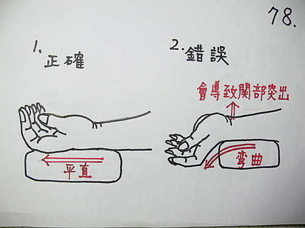

問答錄 80：把脈操作的姿勢
作者：陳建元
陈老师：您好！
先谢谢陈老师能给我发邮件。
很高兴能发现陈老师的讲坛。我是一个中医○○○，并且向往今后的道路从事中医之路。我是大陆浙江省宁波地区人，叫陈○，目前是从事○○工作，在网络上浏览中医网站已有好几年了，可能自己智力差些，没学到啥东西。无意中发现陈老师的讲坛，感觉陈老师的篇篇文章都那么的切实，从心底里发出尊敬。
几个药王脉学的基础问题，想先问问陈老师。
1.脉位的深浅，老师说尺大于关大于寸，但我摸上去感觉寸大于关，因为关部正好是桡骨头突出的地方。请老师指出我错误的理解。
2.皮肤到骨头的距离只有一点点，不管肌肉厚或者瘦的人都能分成5层吗？肾位是正好压到骨头吗？
3.手臂伸直，手掌是平正向上还是稍斜着向上，因为平正向上需要扭动关节，这样会不会影响测量结果。
4.手臂放置的高度，一般书上都写着平心脏的高度，老师说比心尖低5—6公分，这个心尖是指心尖中心还是指心尖最底下的部分，大概是第几肋间隙下5—6公 分。药王脉学对凳子和桌子的高度是否有标准，但人的高低对桌椅是如何调节的，因为老师说手臂高度不准确，就会影响准确度，如果来诊的人很多，那么老师是怎样快速调节的。
5.寸的布指是从腕横纹开始，关和寸的间隔距离应该是多少？高矮胖瘦的人是如何区别？
问了好多问题，给老师添累了。
敬上
陈○
09—02—27

答：
1. 脉位的深浅，老师说尺大于关大于寸，但我摸上去感觉寸大于关，因为关部正好是桡骨头突出的地方。请老师指出我错误的理解。
见〈图78〉，这种问题大都是底下的垫子垫的太后面，手臂反折，则关部会特别突出。
2. 皮肤到骨头的距离只有一点点，不管肌肉厚或者瘦的人都能分成5层吗？
用 26 条的反指按法才按得出来，这种指法因为是渐渐放松而上，指头不用一面出力，只专注在判断，所以很敏感，你可多试几次，连小孩都很好分。如果是用传统的由上向下压的方法，因为一方面指头要用力，一方面要判断，敏感度会大减，容易出错又分不出来。
肾位是正好压到骨头吗？→→是。
3. 手臂伸直，手掌是平正向上还是稍斜着向上，因为平正向上需要扭动关节，这样会不会影响测量结果。
手掌放松自然松开即可，手背与手腕交接处会成一三角型拱高不接触桌面，这是正常现象。平正向上需要略用力扭动关节，测量值与原来设定的标准值会有差异，会失准度。
4. 手臂放置的高度，一般书上都写着平心脏的高度，老师说比心尖低5—6公分，这个心尖是指心尖中心还是指心尖最底下的部分，大概是第几肋间隙下5—6公 分。药王脉学对凳子和桌子的高度是否有标准，但人的高低对桌椅是如何调节的，因为老师说手臂高度不准确，就会影响准确度，如果来诊的人很多，那么老师是怎 样快速调节的。
是指心尖最底下的部分。比心尖低5—6公分的高度刚好是吃饭写字的高度，也是手臂最放松的姿势，若把桌子高度调到平心脏的高度，再放个碗吃饭都不方便，似乎不合理，而手抬到此高度时，大臂肌肉已经开始用力，容易压制桡动脉的血流。要快速调高低可准备2～3种不同高度的椅子和几本厚书本，依情况加减。
5. 寸的布指是从腕横纹开始，关和寸的间隔距离应该是多少？高矮胖瘦的人是如何区别？
用针灸中的「同身寸」法来量，就没有这个问题，看患者三指排齐有多大，就用多大来量。
‥‥‥‥‥‥‥‥‥‥‥‥‥‥‥‥‥‥‥‥‥‥‥‥‥‥‥‥‥‥‥‥‥‥‥‥‥
繁體對照：
問答錄 80：把脈的操作姿勢
陳老師：您好！
先謝謝陳老師能給我發郵件。
很高興能發現陳老師的講壇。我是一個中醫○○○，並且嚮往今後的道路從事中醫之路。我是大陸浙江省寧波地區人，叫陳○，目前是從事○○工作，在網路上流覽中醫網站已有好幾年了，可能自己智力差些，沒學到啥東西。無意中發現陳老師的講壇，感覺陳老師的篇篇文章都那麼的切實，從心底裏發出尊敬。
幾個藥王脈學的基礎問題，想先問問陳老師。
1.脈位的深淺，老師說尺大於關大於寸，但我摸上去感覺寸大於關，因為關部正好是橈骨頭突出的地方。請老師指出我錯誤的理解。
2.皮膚到骨頭的距離只有一點點，不管肌肉厚或者瘦的人都能分成5層嗎？腎位是正好壓到骨頭嗎？
3.手臂伸直，手掌是平正向上還是稍斜著向上，因為平正向上需要扭動關節，這樣會不會影響測量結果。
4.手臂放置的高度，一般書上都寫著平心臟的高度，老師說比心尖低5—6公分，這個心尖是指心尖中心還是指心尖最底下的部分，大概是第幾肋間隙下5—6公 分。藥王脈學對凳子和桌子的高度是否有標準，但人的高低對桌椅是如何調節的，因為老師說手臂高度不準確，就會影響準確度，如果來診的人很多，那麼老師是怎樣快速調節的。
5.寸的布指是從腕橫紋開始，關和寸的間隔距離應該是多少？高矮胖瘦的人是如何區別？
問了好多問題，給老師添累了。
敬上
陳○
09—02—27
答：
1. 脈位的深淺，老師說尺大於關大於寸，但我摸上去感覺寸大於關，因為關部正好是橈骨頭突出的地方。請老師指出我錯誤的理解。
見〈圖78〉，這種問題大都是底下的墊子墊的太後面，手臂反折，則關部會特別突出。
2. 皮膚到骨頭的距離只有一點點，不管肌肉厚或者瘦的人都能分成5層嗎？
用 26 條的反指按法才按得出來，這種指法因為是漸漸放鬆而上，指頭不用一面出力，只專注在判斷，所以很敏感，你可多試幾次，連小孩都很好分。如果是用傳統的由上向下壓的方法，因為一方面指頭要用力，一方面要判斷，敏感度會大減，容易出錯又分不出來。
腎位是正好壓到骨頭嗎？→→是。
3. 手臂伸直，手掌是平正向上還是稍斜著向上，因為平正向上需要扭動關節，這樣會不會影響測量結果。
手掌放鬆自然鬆開即可，手背與手腕交接處會成一三角型拱高不接觸桌面，這是正常現象。平正向上需要略用力扭動關節，測量值與原來設定的標準值會有差異，會失準度。
4. 手臂放置的高度，一般書上都寫著平心臟的高度，老師說比心尖低5—6公分，這個心尖是指心尖中心還是指心尖最底下的部分，大概是第幾肋間隙下5—6公 分。藥王脈學對凳子和桌子的高度是否有標準，但人的高低對桌椅是如何調節的，因為老師說手臂高度不準確，就會影響準確度，如果來診的人很多，那麼老師是怎 樣快速調節的。
是指心尖最底下的部分。比心尖低5—6公分的高度剛好是吃飯寫字的高度，也是手臂最放鬆的姿勢，若把桌子高度調到平心臟的高度，再放個碗吃飯都不方便，似乎不合理，而手抬到此高度時，大臂肌肉已經開始用力，容易壓制橈動脈的血流。要快速調高低可準備2～3種不同高度的椅子和幾本厚書本，依情況加減。
5. 寸的布指是從腕橫紋開始，關和寸的間隔距離應該是多少？高矮胖瘦的人是如何區別？
用針灸中的「同身寸」法來量，就沒有這個問題，看患者三指排齊有多大，就用多大來量。
【引用請先來信告知徵求同意，若有涉及販售營利等商業行為，版權所有拷貝盜用必究。】
【藥王脈學講壇】http://blog.xuite.net/drjychen/twblog